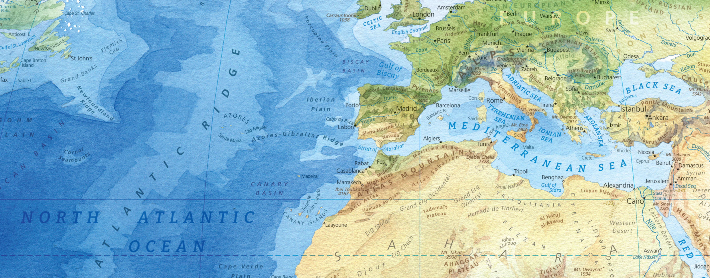
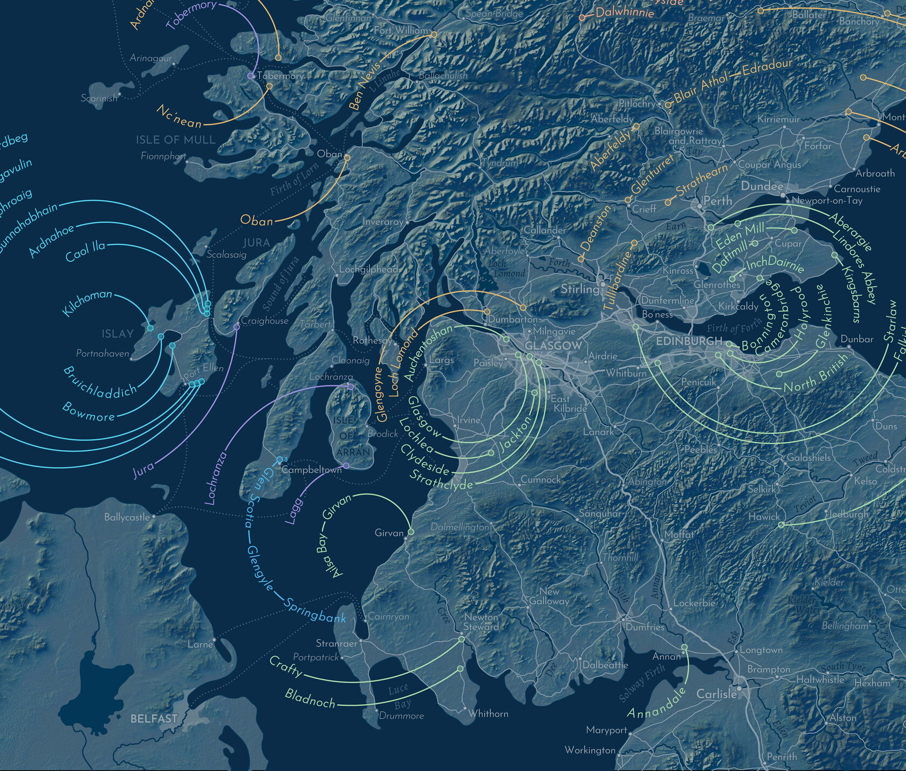
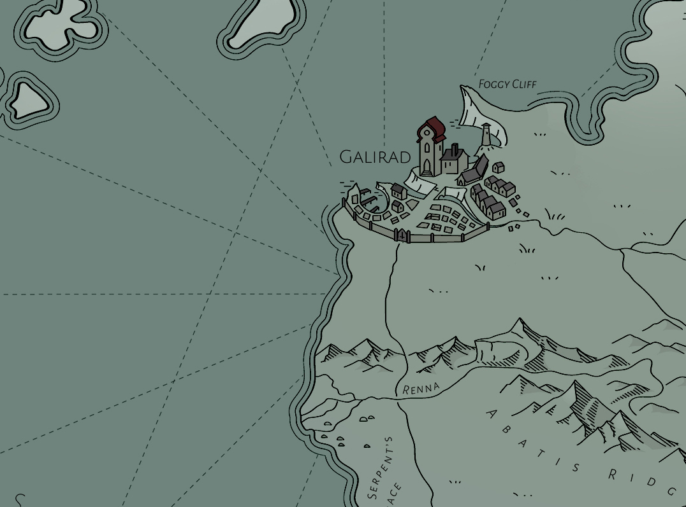
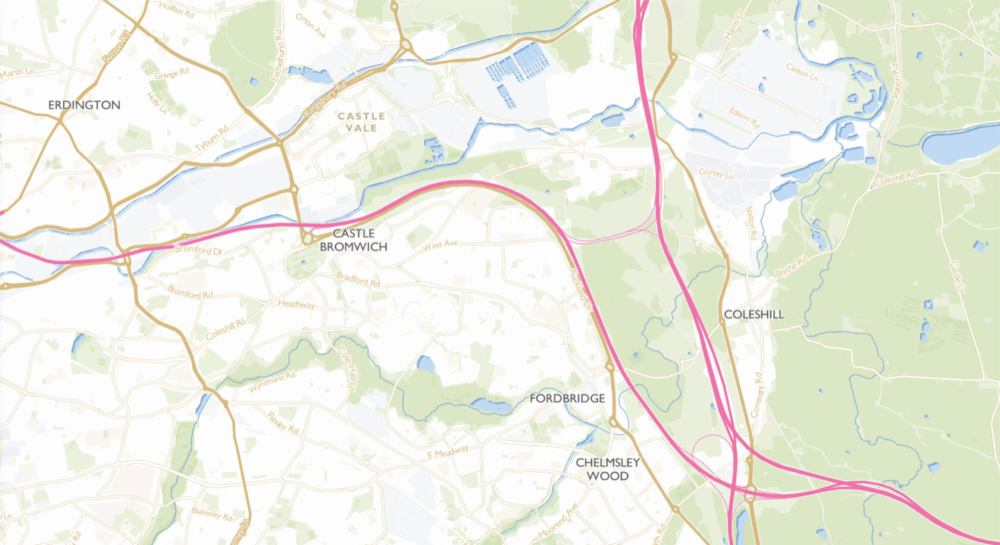
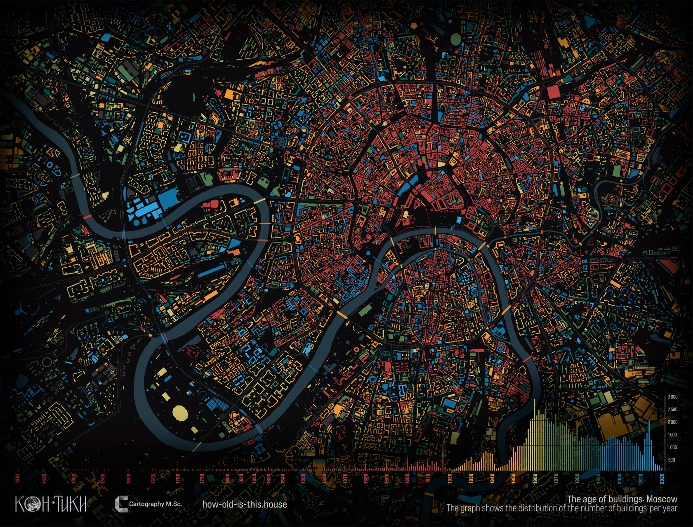

Hi, I'm Milana
I’m a cartographer with a background in human geography and country studies. I’m drawn to projects that merge thoughtful design with modern tech to visualize hidden stories behind places - something I strive for in my own work (still a work in progress, but slowly getting there). When not mapping, you’ll find me hiking or secretly plotting a Bilbo Baggins-style escape from adult responsibilities.

Spirits of Scotland

World of Wolfhound

The Road to
Little Dribbling
Something new
is coming
